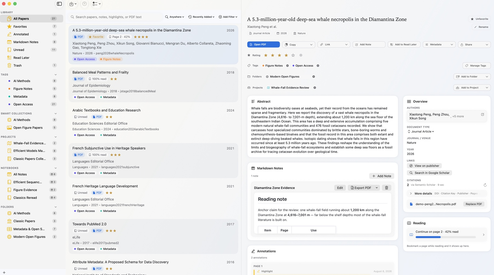
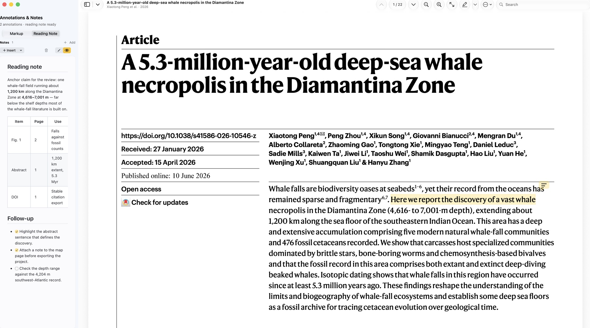
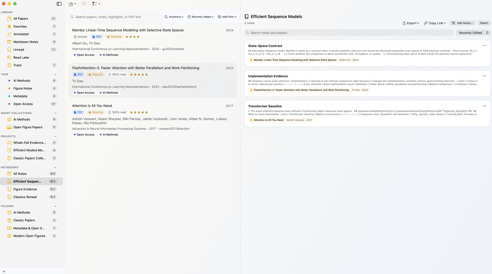
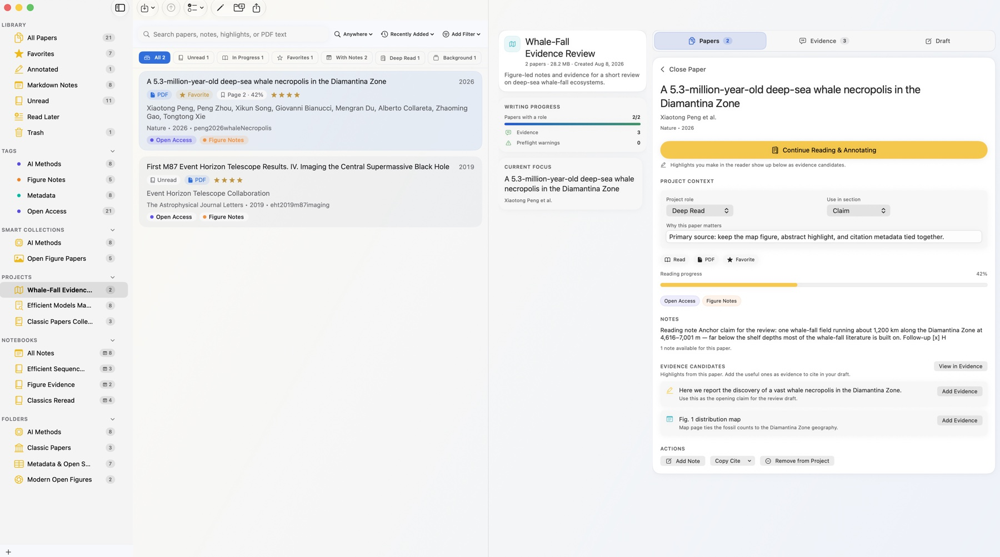

Papyrus keeps the whole research workflow beside the paper.
Papyrus is a native, local-first workspace for researchers who live with PDFs over time. A paper can enter as a PDF, DOI, arXiv ID, BibTeX or RIS record, straight from a Safari tab, or as part of a whole Zotero or Mendeley library; become a searchable library item with editable metadata; open in a native reader; turn up beside the related papers you already own; collect highlights, annotations, and Markdown + LaTeX notes; gather those notes onto themed notebooks without leaving the papers they belong to; join a project with roles and evidence; then leave as BibTeX, RIS, CSL JSON, Markdown, or a project bundle. On a device with Apple Intelligence, Papyrus can also write a paper's key findings on the device, when you ask. No account is required, and there is no subscription and no telemetry. Your library stays on your device unless you turn on iCloud Sync or configure your own WebDAV sync. The interface reads in English, French, Japanese, and Simplified Chinese, and can be set to any of them independently of the system language.
One Library
A paper should not fragment into separate tools. The PDF, metadata, reading progress, tags, notes, project role, evidence, and citation key all belong to the same object. Papyrus keeps that object coherent from first import through the final export.
The example throughout this page follows a single Nature article: A 5.3-million-year-old deep-sea whale necropolis in the Diamantina Zone. The same record appears in the library, opens in the reader, carries Markdown notes, files those notes onto a notebook, supports a project archive, and exports through standard citation formats. The figures here show the Mac; iPad and iPhone have pages of their own.

Capture & Organize
Import should produce a usable record, not a cleanup chore. Papyrus accepts PDFs, folders on Mac, DOI and arXiv identifiers, BibTeX, and RIS. It can read embedded PDF metadata, fetch scholarly metadata, and keep field-level provenance so you can see where a title, author list, year, DOI, or abstract came from when sources disagree. After a library-wide refresh, the summary lists which papers changed and which fields moved.
Scanned papers used to arrive empty. When an opening page carries no extractable text — a photocopied chapter, a raster-only scan — Papyrus reads it with bounded on-device OCR and recovers the title, byline, identifiers, year, and abstract from the image itself. Nothing is uploaded to do it, and OCR-derived fields are marked as such and ranked below publisher metadata, so a reading of the page never outranks a source. An unresolved DOI no longer stops the lookup either: Papyrus falls through to the paper's arXiv, PubMed, or ISBN identifier instead of giving up on the first one that fails.
A refresh that changes nothing now says why. Already current, no identifier we can look up, offline, a field you locked against a conflicting source — each is reported as itself rather than as a uniform “Metadata Refreshed”, and a run over many papers shows its progress and can be stopped partway.
Safari can hand papers over directly. The bundled Safari extension captures the paper on the current tab — with its PDF when one is available — or saves any PDF, DOI, or arXiv link from the right-click (Mac) or long-press (iPad) menu. It captures from inside your browser session, so a paper behind a publisher sign-in you already have access to saves too, not just open-access files. The popup shows exactly what was captured and offers folder, tag, and project pickers so a paper lands organized instead of joining an inbox pile.
A library from Zotero or Mendeley comes across whole. A guide — in the Add menu, the File menu on Mac, and the empty Library — walks through Zotero's Export Library… with its files, then imports the exported folder: each paper arrives with its PDF and its tags, and the PDFs are indexed for search. Everything lands in a From Zotero or From Mendeley folder, so the import is easy to find, check, or remove in one go, and importing the same library again uses the same folder. BibTeX markup — case-protecting braces, escapes, LaTeX accents — is decoded rather than kept, Zotero's child notes come across as notes, and authors read in natural order. A .bib on its own now brings its PDFs along when they can be reached, and says plainly when they can't.
Organization has several layers because research changes shape over time. Tags describe topics; past fifteen of them, the sidebar and the Filter menu list the ten you use most, and All Tags opens every one with a search field, sorted by use or by name — so the hundreds of publisher keywords a Zotero library brings no longer bury the few you made. Folders keep stable archives, and a paper can live in more than one. Flags give seven colors you can name yourself, each with its own shape so they stay tellable apart at a glance. Smart Collections stay current as saved filters — several values per rule, matched on Any or All. Projects gather papers for a draft, review, or literature archive without forcing the global library to mirror a manuscript outline.
Read & Annotate
Reading happens in a native window, not a web viewer embedded in a database. On Mac and iPad you can highlight, underline, strike through, draw freehand ink, leave notes, and set bookmarks. The reader remembers progress and keeps annotations attached to the paper instead of scattering them into a separate notebook.3 Where you stopped, how far in you are, and every page you bookmarked also surface on the paper itself, in the Reading card.
On iPad and iPhone the page can be laid out two ways at once. A Layout Options panel sets the page layout — one column or two-up, with the first page shown alone so spreads line up the way a bound book does — and can split the reader into two panes, side by side or stacked, each holding the same document at a different place. Comparing a figure on page 3 against the discussion on page 14 stops being a scrolling exercise. Search highlights fan out to both panes, and navigation follows whichever pane you touched last.
Figure-heavy articles need more than a citation key. Papyrus lets the article page, the figure, the reading note, and the eventual claim remain adjacent. A Markdown notes pane renders headings, lists, tables, code, and LaTeX math, so a figure comment or draft-ready interpretation stays beside the source that prompted it.

Notebooks
Notes are written one paper at a time, but they are needed by theme. A notebook is a shelf for a topic, a chapter you are drafting, or a reading group. Filing a note onto one copies nothing and moves nothing: the note still belongs to its paper, still says which paper that is, and one click takes you there — with a way back to the shelf. A note can sit on several shelves at once, so “Optics” and “Chapter 3” never have to fight over it.
Add Notes… fills a new shelf from what you have already written, with a search field and an unfiled-only filter, so years of notes take moments rather than a note-by-note pass. A shelf can be searched by a note's text or by the paper behind it, and ordered four ways: recently edited, grouped by paper, by title, or oldest paper first — which reads your own notes forward through the literature, the way a related-work section wants to be written. Select several notes to move, unfile, or trash them together. All Notes lists everything you have written, filed or not, from your very first note.
A whole shelf exports as one Markdown document that matches what is on screen — the current order, the current search — and carries a papyrus:// link so Hookmark, Obsidian, or a plain text plan can point straight back at it.

Projects & Evidence
Projects turn a library into a working argument. A paper can belong to several projects, and each project can give that paper a different role. The Nature article can be an anchor source in a Diamantina whale-fall archive, while adjacent papers provide ecological context, dating methods, or organism-specific background.
The Evidence Board is the place where Papyrus goes beyond storing citations. Each evidence item records the claim you are making, the quote or observation that backs it, your interpretation, the page, the citation key, a section role, and a confidence score. A project starts to read like an argument before the manuscript exists.

The Diamantina Zone record turns scattered whale-fall observations into a regional fossil archive.
Discovery of a vast whale necropolis extending along the deep seafloor.
[@peng2026whaleNecropolis]Figure panels tie site imagery, specimen distribution, and ecological interpretation to the same argument.
[@peng2026whaleNecropolis]Background whale-fall ecology papers separate local fossil evidence from broader community patterns.
[@smith2021abyssalWhaleFalls]| Cite key | Section | Page | Conf. | Claim |
|---|---|---|---|---|
| peng2026whaleNecropolis | Claim | p.2 | 5/5 | The Diamantina Zone paper anchors the archive with figure-rich site evidence. |
| smith2021abyssalWhaleFalls | Context | p.3 | 4/5 | Modern whale-fall ecology supplies the living-community comparison. |
| goffredi2018osedaxBivalves | Biology | p.4 | 4/5 | Bone-eating worms and bivalves help explain post-fall community succession. |
| reynolds2020strontiumDating | Dating | p.1 | 3/5 | Marine vertebrate dating papers frame how fossil timing is interpreted. |
Similar Papers & Apple Intelligence
Every paper lists its neighbours already in your library. The Similar Papers card ranks related papers on the device and gives the reason for each. Opening one on iPad or Mac shows “‹ Back to” the paper you came from, so a trail of jumps can be walked back one step at a time. Below the local list, Papyrus can also suggest related papers From OpenAlex — off until you turn it on, and then it sends only the paper's DOI.5
On a device with Apple Intelligence, the model works on the paper, on the device. A Key Findings card after the abstract writes an overview and three to five findings from the paper's own abstract, introduction, and conclusion, streaming in as it writes. Explain Connections says how the papers on a Similar Papers card relate, and Explain Figure in the reader talks through the figure in front of you; both stream too. Each runs only when you ask. In the background, a few papers at a time and never in Low Power Mode, the same model tags papers with the concepts, methods, and datasets they use, which Similar Papers ranks with.
All of it runs with Apple's on-device model: the paper's text does not leave the device for these features, and Papyrus has no AI server of its own. It needs a device that supports Apple Intelligence, with Apple Intelligence turned on; the card says why when it is off or still preparing, and stays hidden on devices that cannot run it. A model can misread a paper, and the card says so — treat its findings as a pointer back into the text, not a substitute for it.
Search, Sync & Privacy
A research desk has to be searchable and inspectable. Papyrus indexes titles, metadata, notes, annotations, and extracted PDF text so a phrase can lead back to the paper, page, and context where it was useful. The reading queue keeps active work visible, while filters and Smart Collections surface papers by tag, journal, year range, favorite status, flag, document type, or PDF availability.
Local-first is the default, not an add-on. Your library, PDFs, notes, annotations, search index, and project evidence live on your device. No account is required, and there is no telemetry. Network access is limited to actions you choose, such as metadata lookup, OpenAlex suggestions, or sync. iCloud Sync uses your own iCloud account to keep a library current across Mac, iPad, and iPhone — edits made on two devices merge field by field, and tags, folders, notebooks, and project papers combine rather than overwrite — while WebDAV sync remains available for a server destination you control and dated restore points.4
Export & Citation
The exit path is as important as the import path. A single paper, a notebook, or a whole project can leave as BibTeX, RIS, CSL JSON, Markdown, or a full bundle. Project export can include papers, notes, evidence, citations, and a report that flags missing PDFs, duplicate cite keys, sparse metadata, or unresolved citation problems before you hand work to another tool.
A paper can also be linked to, not just exported. Every paper and every notebook has a permanent papyrus:// address — copyable as a plain link or as Markdown, and anchorable to the page you are on. Because the identifier is the paper's sync identity, the link survives renaming, re-tagging, moving between folders, trashing and restoring, even replacing the PDF, and it resolves on every device signed in to your library.
That is what makes Hookmark work properly: hook a paper to the manuscript section, the task, or the email that sent you to it, and come back to it later on the page you left. Papyrus also answers get-current-item over x-callback-url, so Hookmark, Shortcuts, Alfred, Keyboard Maestro, or Drafts can ask what you are reading right now and get back the title, the link, and the PDF's path. Read the full URL scheme →
Citations can also be copied in common styles without leaving the library. The reference for peng2026whaleNecropolis, formatted six ways:
Peng, X., Zhou, P., Song, X., Bianucci, G., Du, M., Collareta, A., Gao, Z., & Xie, T. (2026). A 5.3-million-year-old deep-sea whale necropolis in the Diamantina Zone. Nature.
- APA
- Peng, X., Zhou, P., Song, X., Bianucci, G., Du, M., Collareta, A., Gao, Z., & Xie, T. (2026). A 5.3-million-year-old deep-sea whale necropolis in the Diamantina Zone. Nature.
- MLA
- Peng, Xiaotong, et al. “A 5.3-Million-Year-Old Deep-Sea Whale Necropolis in the Diamantina Zone.” Nature, 2026.
- Chicago
- Peng, Xiaotong, et al. “A 5.3-Million-Year-Old Deep-Sea Whale Necropolis in the Diamantina Zone.” Nature (2026).
- IEEE
- X. Peng et al., “A 5.3-million-year-old deep-sea whale necropolis in the Diamantina Zone,” Nature, 2026.
- Harvard
- Peng, X. et al. (2026) ‘A 5.3-million-year-old deep-sea whale necropolis in the Diamantina Zone’, Nature.
- Vancouver
- Peng X, Zhou P, Song X, Bianucci G, Du M, Collareta A, et al. A 5.3-million-year-old deep-sea whale necropolis in the Diamantina Zone. Nature. 2026.
@article{peng2026whaleNecropolis, title = {A 5.3-million-year-old deep-sea whale necropolis in the Diamantina Zone}, author = {Peng, Xiaotong and Zhou, Peng and Song, Xikun and Bianucci, Giovanni and others}, journal = {Nature}, doi = {10.1038/s41586-026-10546-z}, year = {2026} }
The same library, in the shape each device wants. Every screenshot on these pages comes from the running app, in light and dark.
.bib for LaTeX.
See the Mac →
iPadOS 17+
Papyrus for iPad
The same workspace under touch, with Apple Pencil markup straight onto the page and a sidebar that leads with what you use.
See the iPad →
iOS 17+
Papyrus for iPhone
Read, capture, and file one-handed — and pick up on the page you left.
See the iPhone →
- 1 Free on the Mac App Store and the App Store for iPhone and iPad — every feature included, no purchase, no subscription. ↩
- 2 The public beta is distributed through Apple's external TestFlight program. ↩
- 3 Annotation tools: highlight, underline, strikethrough, freehand ink, notes, and bookmarks. Notes are Markdown with LaTeX math. ↩
- 4 Sync is optional. iCloud Sync uses your Apple ID and iCloud account; WebDAV sync uses a destination you control. Both can stay off. ↩
- 5 OpenAlex suggestions are off by default and ask before they turn on. When on, Papyrus sends the DOI of the paper you are viewing to OpenAlex (api.openalex.org), with your contact email if you set one in Settings; titles, abstracts, notes, and the rest of the library stay on the device. See Privacy. ↩
Papyrus is free on the Mac App Store and the App Store for iPhone and iPad. The app ships in English, French, Japanese, and Simplified Chinese.
Free — no account required, no telemetry, no subscription.
Testing a pre-release build? Join the public TestFlight beta ↗2
References
- Peng, X., Zhou, P., Song, X., Bianucci, G. et al. A 5.3-million-year-old deep-sea whale necropolis in the Diamantina Zone. Nature (2026). doi:10.1038/s41586-026-10546-z.
- Papyrus. Download & system requirements. macOS 14+, iPadOS & iOS 17+.
- Papyrus. Hookmark & the
papyrus://URL scheme. Paper links, page anchors, notebook links, x-callback-url. - Papyrus. Support & FAQ.
- Papyrus. Privacy. Local-first; no account; no telemetry.
- Papyrus. Changelog, v2.2.
@article{peng2026whaleNecropolis, title={A 5.3-million-year-old deep-sea whale necropolis in the Diamantina Zone}, author={Peng, Xiaotong and Zhou, Peng and Song, Xikun and Bianucci, Giovanni and others}, journal={Nature}, doi={10.1038/s41586-026-10546-z}, year={2026}} @article{smith2021abyssalWhaleFalls, title={Whale-fall ecosystems at abyssal depths}, author={Smith, Craig R. and Glover, Adrian G.}, journal={Annual Review of Marine Science}, year={2021}} @article{goffredi2018osedaxBivalves, title={Bone-eating worms and chemosynthetic bivalves in whale-fall communities}, author={Goffredi, Shana K. and Rouse, Greg W.}, year={2018}} @article{reynolds2020strontiumDating, title={Strontium isotope dating of marine vertebrate fossils}, author={Reynolds, Laura E. and Collareta, Alberto}, year={2020}}
Copyright © 2026 ZendaX. All rights reserved.